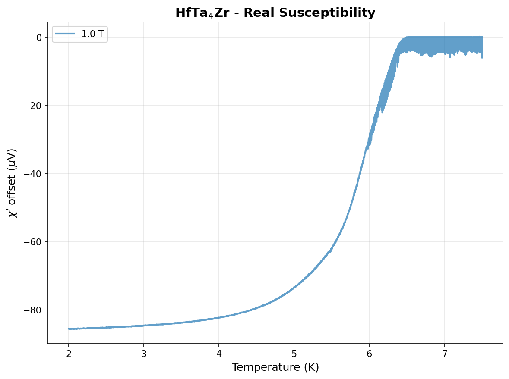
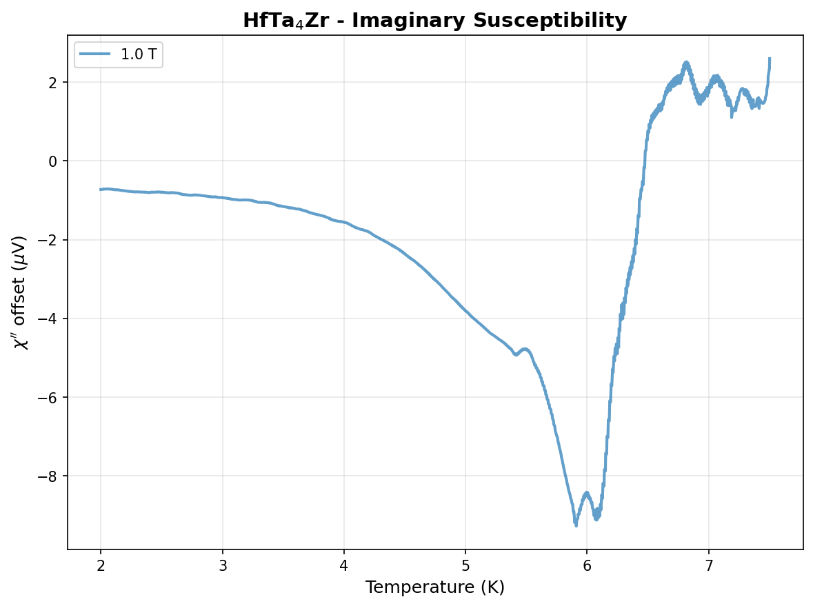
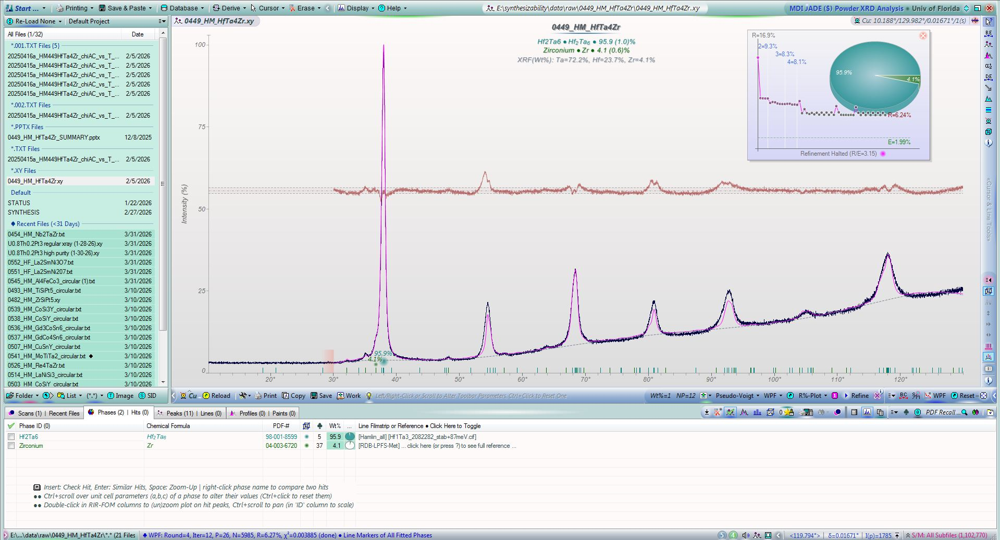
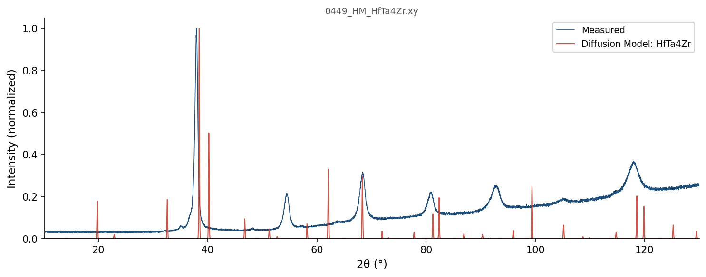
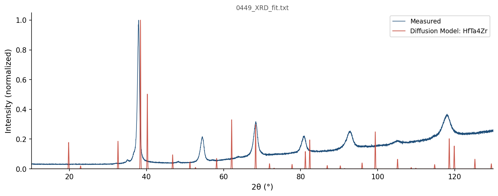

0449_HM_HfTa4Zr
HfTa4Zr
Basic Information
sample_number
449
sample_id
0449_HM_HfTa4Zr
formula
HfTa4Zr
remake_of
Not available
remake_reason
Not available
files
- SYNTHESIS
- 20250415a_HM449HfTa4Zr_chiAC_vs_T_B_4.002.txt
- 20250416a_HM449HfTa4Zr_chiAC_vs_T_B_6.001.txt
- 20250416a_HM449HfTa4Zr_chiAC_vs_T_B_5.001.txt
- 20250415a_HM449HfTa4Zr_chiAC_vs_T_B_3.001.txt
- PDF Card - 04-003-6720.cif
- 0449_HM_HfTa4Zr.wpf.txt
- Hf1Ta3_2082282_stab+87meV.cif
- 0449_HM_HfTa4Zr_SUMMARY.pptx
- 0449_HM_HfTa4Zr.wrk.xml
- STATUS
- 0449_XRD_fit.JPG
- 0449_HM_HfTa4Zr.xy
- 20250415a_HM449HfTa4Zr_chiAC_vs_T_B_2.001.txt
- 0449_XRD_fit.txt
- 20250415a_HM449HfTa4Zr_chiAC_vs_T_B_0.001.txt
- 20250415a_HM449HfTa4Zr_chiAC_vs_T_B_1T.txt
has_summary
Yes
Characterization
superconductivity
Tc of 7.3 K
tc_kelvin
7.3
xrd_type
Bulk
xrd_instrument
Panalytical
xrd_result
BCC solid solution
Synthesis Details
synthesis_content
Raw materials:
Hf sponge(99.6%), Lot #D14U011
Ta foil, unknown purity & Lot #
Zr sponge (99.5%), Lot #C19Y039
Procedure:
target masses
Hf: 0.0866 g, Ta: 0.3511 g, Zr: 0.0443 g
measured masses
Hf: 0.0866 g, Ta: 0.3513 g, Zr: 0.0443 g
initial mass: 0.4822 g
final mass: 0.4797 g
loss: 0.52%
Heating curve: once a pellet, melt was heated and flipped 3 times. heated for 30-40 seconds
Hf sponge(99.6%), Lot #D14U011
Ta foil, unknown purity & Lot #
Zr sponge (99.5%), Lot #C19Y039
Procedure:
target masses
Hf: 0.0866 g, Ta: 0.3511 g, Zr: 0.0443 g
measured masses
Hf: 0.0866 g, Ta: 0.3513 g, Zr: 0.0443 g
initial mass: 0.4822 g
final mass: 0.4797 g
loss: 0.52%
Heating curve: once a pellet, melt was heated and flipped 3 times. heated for 30-40 seconds
mass_loss_percent
0.52
initial_mass_g
0.4822
final_mass_g
0.4797
Cost & Feasibility
price_per_gram
2.367
arc_meltable
Yes
disorder_probability
0.9978
prediction_list
Diffusion Model
XRD Data
xrd_patterns
Pattern 1:
Instrument: Panalytical
Date: None
Anode: None
2θ range: 10.18835563 - 129.99144293°
Points: 7170
File: 0449_HM_HfTa4Zr.xy
Instrument: Panalytical
Date: None
Anode: None
2θ range: 10.18835563 - 129.99144293°
Points: 7170
File: 0449_HM_HfTa4Zr.xy
Pattern 2:
Instrument: Panalytical
Date: None
Anode: None
2θ range: 10.18836 - 129.9823°
Points: 7170
File: 0449_XRD_fit.txt
Instrument: Panalytical
Date: None
Anode: None
2θ range: 10.18836 - 129.9823°
Points: 7170
File: 0449_XRD_fit.txt
xrd_files
- 0449_HM_HfTa4Zr.xy
- 0449_XRD_fit.txt
xrd_n_files
2
xrd_two_theta_min
10.19
xrd_two_theta_max
130
Susceptibility Data
chi_files
- 20250415a_HM449HfTa4Zr_chiAC_vs_T_B_4.002.txt
- 20250416a_HM449HfTa4Zr_chiAC_vs_T_B_6.001.txt
- 20250416a_HM449HfTa4Zr_chiAC_vs_T_B_5.001.txt
- 20250415a_HM449HfTa4Zr_chiAC_vs_T_B_3.001.txt
- 20250415a_HM449HfTa4Zr_chiAC_vs_T_B_2.001.txt
- 20250415a_HM449HfTa4Zr_chiAC_vs_T_B_0.001.txt
- 20250415a_HM449HfTa4Zr_chiAC_vs_T_B_1T.txt
chi_n_files
7
chi_has_high_field
Yes
chi_fields
- 1.0
Status
status_content
no material flew off the sample when arc melting. No more black smearing that was seen in 0448 (see ppt for picture). <1% loss, pelleting Ta foil beforehand seems to have helped loss.
arc melted pellet did not split apart when hit with hammer.
pellet did not look crystalline and had no facets.
Sample was cut for PPMS testing. The cut sample weighs 0.03404g
Sample was dropped and lost in the lab 6/4/2025. Sample was later found.
Superconductivity: Tc of 7.3 K
XRD: Bulk, NRF XRD, BCC solid solution
List: Diffusion Model
arc melted pellet did not split apart when hit with hammer.
pellet did not look crystalline and had no facets.
Sample was cut for PPMS testing. The cut sample weighs 0.03404g
Sample was dropped and lost in the lab 6/4/2025. Sample was later found.
Superconductivity: Tc of 7.3 K
XRD: Bulk, NRF XRD, BCC solid solution
List: Diffusion Model
Composition Check
✓ Composition OK — max deviation 0.01%
| Element | Expected (mol frac) | Measured (mol frac) | Δ (mol frac) | Δ (%) |
|---|---|---|---|---|
| Hf | 0.1667 | 0.1666 | -0.0001 | -0.01% |
| Ta | 0.6667 | 0.6666 | -0.0000 | -0.00% |
| Zr | 0.1667 | 0.1668 | +0.0001 | +0.01% |
■ >2%
■ >5%
■ >10%
OQMD Thermodynamic Data
No OQMD data available for this composition
OQMD Phases in Element System
335 entries in the Hf-Ta-Zr element system (4 on hull, 29 ICSD-tagged). Stability in meV/atom. Sorted most stable first.
| Composition | Stability (meV/atom) | ΔE (meV/atom) | ICSD | Space | Entry | CIF |
|---|---|---|---|---|---|---|
Hf1Zr2 |
-24 | -24.6 | Hf-Zr | 1375968 | CIF | |
Hf1 |
+0 | 0.0 | Hf | 1215332 | CIF | |
Ta1 |
+0 | 0.0 | Ta | 1215197 | CIF | |
Zr1 |
+0 | -0.2 | Zr | 1791927 | CIF | |
Hf1 |
+0 | 0.1 | ✓ | Hf | 677914 | CIF |
Ta1 |
+0 | 0.1 | Ta | 2162725 | CIF | |
Ta1 |
+0 | 0.1 | Ta | 2162668 | CIF | |
Ta1 |
+0 | 0.1 | Ta | 1522225 | CIF | |
Zr1 |
+0 | 0.0 | ✓ | Zr | 67408 | CIF |
Zr1 |
+0 | 0.1 | Zr | 758445 | CIF | |
Zr1 |
+0 | 0.1 | Zr | 758455 | CIF | |
Hf1 |
+0 | 0.2 | ✓ | Hf | 676495 | CIF |
Hf1 |
+0 | 0.3 | ✓ | Hf | 687554 | CIF |
Ta1 |
+0 | 0.3 | ✓ | Ta | 676531 | CIF |
Hf1 |
+0 | 0.3 | ✓ | Hf | 676527 | CIF |
Zr1 |
+0 | 0.2 | ✓ | Zr | 8196 | CIF |
Zr1 |
+0 | 0.2 | Zr | 1215390 | CIF | |
Zr1 |
+0 | 0.2 | Zr | 758475 | CIF | |
Zr1 |
+0 | 0.2 | Zr | 758462 | CIF | |
Zr1 |
+0 | 0.2 | Zr | 758464 | CIF | |
Zr1 |
+0 | 0.3 | Zr | 758463 | CIF | |
Zr1 |
+0 | 0.3 | Zr | 758466 | CIF | |
Zr1 |
+0 | 0.3 | Zr | 758474 | CIF | |
Zr1 |
+0 | 0.3 | Zr | 758457 | CIF | |
Zr1 |
+1 | 0.3 | ✓ | Zr | 117515 | CIF |
Zr1 |
+1 | 0.3 | ✓ | Zr | 2030147 | CIF |
Hf1 |
+1 | 0.5 | ✓ | Hf | 687654 | CIF |
Zr1 |
+1 | 0.4 | Zr | 758448 | CIF | |
Zr1 |
+1 | 0.4 | Zr | 758450 | CIF | |
Zr1 |
+1 | 0.4 | Zr | 758465 | CIF | |
Zr1 |
+1 | 0.4 | Zr | 758449 | CIF | |
Zr1 |
+1 | 0.4 | Zr | 758470 | CIF | |
Zr1 |
+1 | 0.4 | Zr | 758456 | CIF | |
Zr1 |
+1 | 0.4 | Zr | 758453 | CIF | |
Hf1 |
+1 | 0.6 | ✓ | Hf | 2030130 | CIF |
Zr1 |
+1 | 0.5 | Zr | 758472 | CIF | |
Zr1 |
+1 | 0.5 | Zr | 758461 | CIF | |
Zr1 |
+1 | 0.5 | Zr | 758471 | CIF | |
Zr1 |
+1 | 0.5 | Zr | 758458 | CIF | |
Zr1 |
+1 | 0.5 | Zr | 758451 | CIF | |
Zr1 |
+1 | 0.5 | Zr | 758454 | CIF | |
Zr1 |
+1 | 0.5 | Zr | 758460 | CIF | |
Zr1 |
+1 | 0.5 | Zr | 758473 | CIF | |
Zr1 |
+1 | 0.5 | Zr | 758452 | CIF | |
Zr1 |
+1 | 0.5 | Zr | 758446 | CIF | |
Zr1 |
+1 | 0.5 | Zr | 758444 | CIF | |
Zr1 |
+1 | 0.6 | Zr | 758459 | CIF | |
Zr1 |
+1 | 0.6 | Zr | 758447 | CIF | |
Zr1 |
+1 | 0.6 | Zr | 1926822 | CIF | |
Zr1 |
+1 | 1.0 | ✓ | Zr | 2031515 | CIF |
Zr1 |
+1 | 1.3 | Zr | 1801137 | CIF | |
Ta1 |
+2 | 2.3 | ✓ | Ta | 670903 | CIF |
Hf1 |
+2 | 2.4 | Hf | 1215243 | CIF | |
Ta1 |
+3 | 2.6 | ✓ | Ta | 16591 | CIF |
Ta1 |
+3 | 2.7 | ✓ | Ta | 9754 | CIF |
Ta1 |
+3 | 2.7 | Ta | 1515748 | CIF | |
Ta1 |
+3 | 2.7 | ✓ | Ta | 9755 | CIF |
Zr1 |
+3 | 2.9 | Zr | 1215301 | CIF | |
Hf1Zr19 |
+5 | 1.2 | Hf-Zr | 2160355 | CIF | |
Hf5Zr1 |
+7 | 1.2 | Hf-Zr | 1450581 | CIF | |
Hf3Zr1 |
+11 | 1.3 | Hf-Zr | 322419 | CIF | |
Hf1Zr5 |
+14 | 1.5 | Hf-Zr | 756892 | CIF | |
Hf1Zr1 |
+18 | -0.5 | Hf-Zr | 756890 | CIF | |
Hf1Zr3 |
+19 | 0.3 | Hf-Zr | 756895 | CIF | |
Hf1Zr1 |
+19 | 0.5 | Hf-Zr | 1236135 | CIF | |
Hf1Zr1 |
+19 | 0.7 | Hf-Zr | 756881 | CIF | |
Hf1Zr3 |
+19 | 0.9 | Hf-Zr | 321224 | CIF | |
Hf1Zr1 |
+19 | 0.9 | Hf-Zr | 756903 | CIF | |
Hf1Zr1 |
+20 | 1.1 | Hf-Zr | 756883 | CIF | |
Hf1Zr3 |
+20 | 1.1 | Hf-Zr | 756907 | CIF | |
Hf1Zr1 |
+20 | 1.2 | Hf-Zr | 756886 | CIF | |
Zr1 |
+20 | 19.5 | Zr | 758468 | CIF | |
Hf1Zr1 |
+20 | 1.3 | Hf-Zr | 756905 | CIF | |
Hf1Zr1 |
+20 | 1.4 | Hf-Zr | 756880 | CIF | |
Hf1Zr1 |
+20 | 1.5 | Hf-Zr | 756884 | CIF | |
Hf1Zr1 |
+20 | 1.5 | Hf-Zr | 756902 | CIF | |
Hf1Zr1 |
+20 | 1.5 | Hf-Zr | 756896 | CIF | |
Hf1Zr1 |
+20 | 1.6 | Hf-Zr | 756882 | CIF | |
Hf1Zr1 |
+20 | 1.8 | Hf-Zr | 756897 | CIF | |
Hf1Zr1 |
+20 | 1.8 | Hf-Zr | 756889 | CIF | |
Hf1Zr1 |
+21 | 2.1 | Hf-Zr | 756906 | CIF | |
Hf1Zr3 |
+21 | 2.4 | Hf-Zr | 756898 | CIF | |
Hf3Zr4 |
+22 | 0.5 | Hf-Zr | 756891 | CIF | |
Hf3Zr4 |
+22 | 0.8 | Hf-Zr | 756879 | CIF | |
Hf1Zr1 |
+22 | 3.7 | Hf-Zr | 756888 | CIF | |
Hf1Zr1 |
+22 | 3.7 | Hf-Zr | 756878 | CIF | |
Hf1Zr1 |
+22 | 4.0 | Hf-Zr | 756876 | CIF | |
Hf1Zr1 |
+23 | 4.7 | Hf-Zr | 756885 | CIF | |
Hf1Zr2 |
+24 | -0.8 | Hf-Zr | 756893 | CIF | |
Hf1Zr2 |
+26 | 1.4 | Hf-Zr | 756900 | CIF | |
Zr1 |
+26 | 26.2 | Zr | 1216106 | CIF | |
Hf1Zr2 |
+26 | 1.9 | Hf-Zr | 756887 | CIF | |
Hf1Zr2 |
+27 | 2.1 | Hf-Zr | 756901 | CIF | |
Hf1Zr2 |
+28 | 3.0 | Hf-Zr | 756877 | CIF | |
Ta1 |
+31 | 31.4 | ✓ | Ta | 2030257 | CIF |
Ta1 |
+32 | 31.6 | Ta | 1280388 | CIF | |
Ta1 |
+32 | 31.6 | Ta | 1215019 | CIF | |
Hf1 |
+32 | 32.2 | Hf | 1216045 | CIF | |
Ta2Zr1 |
+35 | 35.0 | Ta-Zr | 1610001 | CIF | |
Hf1Zr1 |
+35 | 16.8 | Hf-Zr | 1229801 | CIF | |
Hf1Zr1 |
+40 | 21.2 | Hf-Zr | 2085853 | CIF | |
Zr1 |
+40 | 39.7 | ✓ | Zr | 7509 | CIF |
Zr1 |
+40 | 39.7 | Zr | 1214589 | CIF | |
Zr1 |
+43 | 42.4 | Zr | 1215747 | CIF | |
Hf1 |
+43 | 43.1 | ✓ | Hf | 2015187 | CIF |
Hf1 |
+43 | 43.5 | Hf | 1801138 | CIF | |
Hf1Ta2 |
+47 | 46.7 | Hf-Ta | 1609937 | CIF | |
Zr1 |
+48 | 48.2 | Zr | 1215480 | CIF | |
Ta2Zr1 |
+51 | 51.1 | Ta-Zr | 1610091 | CIF | |
Hf1 |
+52 | 51.9 | Hf | 1215422 | CIF | |
Zr1 |
+56 | 56.0 | Zr | 1215836 | CIF | |
Zr1 |
+56 | 56.0 | Zr | 1214678 | CIF | |
Hf1Ta2 |
+63 | 63.1 | Hf-Ta | 1610027 | CIF | |
Hf1Zr3 |
+66 | 48.0 | Hf-Zr | 2082286 | CIF | |
Hf1Zr3 |
+66 | 48.0 | Hf-Zr | 2082501 | CIF | |
Hf1Zr3 |
+68 | 49.5 | Hf-Zr | 345710 | CIF | |
Hf1Zr3 |
+70 | 51.5 | Hf-Zr | 301335 | CIF | |
Ta2Zr1 |
+72 | 71.5 | Ta-Zr | 1576973 | CIF | |
Hf1 |
+72 | 71.7 | Hf | 1214531 | CIF | |
Hf1 |
+72 | 71.9 | ✓ | Hf | 676154 | CIF |
Hf1 |
+72 | 72.0 | Hf | 1215689 | CIF | |
Hf1Zr2 |
+72 | 47.7 | Hf-Zr | 1435785 | CIF | |
Hf3Zr1 |
+73 | 64.0 | Hf-Zr | 2080527 | CIF | |
Hf1Zr1 |
+73 | 54.8 | Hf-Zr | 2080487 | CIF | |
Hf1Zr1 |
+73 | 54.8 | Hf-Zr | 2120996 | CIF | |
Hf3Zr1 |
+74 | 64.7 | Hf-Zr | 346905 | CIF | |
Hf3Zr1 |
+75 | 65.5 | Hf-Zr | 300140 | CIF | |
Hf1Ta3 |
+75 | 74.7 | Hf-Ta | 2080678 | CIF | |
Hf1Ta3 |
+75 | 74.7 | Hf-Ta | 2121014 | CIF | |
Hf3Zr1 |
+76 | 66.7 | Hf-Zr | 2086125 | CIF | |
Hf1Zr1 |
+76 | 57.5 | Hf-Zr | 2083252 | CIF | |
Hf1Ta3 |
+76 | 76.5 | Hf-Ta | 2085985 | CIF | |
Zr1 |
+80 | 79.6 | ✓ | Zr | 9320 | CIF |
Hf1 |
+80 | 79.9 | Hf | 1215778 | CIF | |
Hf1Zr1 |
+80 | 61.5 | Hf-Zr | 326845 | CIF | |
Zr1 |
+80 | 79.9 | Zr | 1215212 | CIF | |
Zr1 |
+81 | 80.3 | Zr | 1215925 | CIF | |
Hf1Ta2 |
+81 | 80.5 | Hf-Ta | 1449771 | CIF | |
Hf1Ta2 |
+83 | 82.7 | Hf-Ta | 1594388 | CIF | |
Hf1Zr1 |
+83 | 64.3 | Hf-Zr | 337303 | CIF | |
Hf1 |
+83 | 83.1 | Hf | 1214620 | CIF | |
Hf5Ta1 |
+83 | 83.3 | Hf-Ta | 1435701 | CIF | |
Hf1Ta3 |
+87 | 87.3 | Hf-Ta | 2082282 | CIF | |
Hf1Ta3 |
+87 | 87.3 | Hf-Ta | 2082483 | CIF | |
Ta3Zr1 |
+88 | 87.5 | Ta-Zr | 2121483 | CIF | |
Ta3Zr1 |
+88 | 87.5 | Ta-Zr | 2086174 | CIF | |
Ta1 |
+88 | 88.2 | Ta | 1577325 | CIF | |
Ta1 |
+88 | 88.3 | Ta | 1214841 | CIF | |
Ta1Zr3 |
+89 | 88.8 | Ta-Zr | 2080587 | CIF | |
Ta1Zr3 |
+89 | 88.9 | Ta-Zr | 2121071 | CIF | |
Zr1 |
+91 | 90.8 | Zr | 1214945 | CIF | |
Hf1Zr1 |
+91 | 72.6 | Hf-Zr | 2121535 | CIF | |
Ta3Zr1 |
+91 | 91.0 | Ta-Zr | 2080723 | CIF | |
Hf1Ta1 |
+94 | 93.5 | Hf-Ta | 2082183 | CIF | |
Hf1Ta1 |
+94 | 93.5 | Hf-Ta | 2082132 | CIF | |
Ta1Zr1 |
+95 | 95.0 | Ta-Zr | 758010 | CIF | |
Ta1Zr1 |
+95 | 95.0 | Ta-Zr | 2082189 | CIF | |
Ta1Zr5 |
+96 | 96.0 | Ta-Zr | 758012 | CIF | |
Ta2Zr1 |
+96 | 96.3 | Ta-Zr | 1520706 | CIF | |
Ta1Zr1 |
+97 | 97.2 | Ta-Zr | 2084845 | CIF | |
Hf1Ta3 |
+98 | 97.9 | Hf-Ta | 308748 | CIF | |
Hf1Zr1 |
+100 | 82.0 | Hf-Zr | 2082136 | CIF | |
Hf1Zr1 |
+100 | 82.0 | Hf-Zr | 2082201 | CIF | |
Ta3Zr1 |
+100 | 100.4 | Ta-Zr | 2082489 | CIF | |
Ta1 |
+100 | 100.5 | Ta | 1485545 | CIF | |
Ta1Zr3 |
+102 | 102.1 | Ta-Zr | 758027 | CIF | |
Hf1Ta1 |
+107 | 107.0 | Hf-Ta | 2080471 | CIF | |
Ta3Zr4 |
+108 | 107.4 | Ta-Zr | 757999 | CIF | |
Ta1Zr3 |
+108 | 107.9 | Ta-Zr | 2086038 | CIF | |
Ta1Zr3 |
+109 | 108.7 | Ta-Zr | 2121387 | CIF | |
Ta1 |
+109 | 108.8 | Ta | 1484597 | CIF | |
Ta1 |
+109 | 109.3 | Ta | 1487640 | CIF | |
Hf3Ta1 |
+110 | 110.3 | Hf-Ta | 2086121 | CIF | |
Ta1 |
+111 | 111.0 | Ta | 1215910 | CIF | |
Hf1Ta1 |
+112 | 111.7 | Hf-Ta | 2121533 | CIF | |
Hf1Ta1 |
+112 | 112.0 | Hf-Ta | 2085849 | CIF | |
Ta3Zr1 |
+113 | 112.7 | Ta-Zr | 311445 | CIF | |
Ta1Zr1 |
+115 | 114.6 | Ta-Zr | 758001 | CIF | |
Ta1Zr2 |
+115 | 114.6 | Ta-Zr | 758021 | CIF | |
Ta1Zr1 |
+115 | 115.0 | Ta-Zr | 2080477 | CIF | |
Ta2Zr1 |
+116 | 116.2 | Ta-Zr | 1449953 | CIF | |
Hf1Ta1Zr1 |
+116 | 104.1 | Hf-Ta-Zr | 2085637 | CIF | |
Ta1 |
+117 | 116.5 | Ta | 1485143 | CIF | |
Ta1Zr1 |
+119 | 118.8 | Ta-Zr | 2085902 | CIF | |
Ta1Zr3 |
+120 | 120.1 | Ta-Zr | 2082339 | CIF | |
Ta1Zr1 |
+123 | 122.7 | Ta-Zr | 758004 | CIF | |
Ta1Zr1 |
+123 | 122.8 | Ta-Zr | 758003 | CIF | |
Ta1Zr1 |
+123 | 123.4 | Ta-Zr | 758025 | CIF | |
Hf1Zr3 |
+124 | 105.5 | Hf-Zr | 2085989 | CIF | |
Hf1Zr3 |
+126 | 107.8 | Hf-Zr | 311877 | CIF | |
Hf3Ta1 |
+128 | 127.5 | Hf-Ta | 319290 | CIF | |
Hf1Ta1 |
+128 | 127.6 | Hf-Ta | 2084792 | CIF | |
Ta1Zr3 |
+131 | 130.6 | Ta-Zr | 758018 | CIF | |
Ta1Zr1 |
+132 | 132.2 | Ta-Zr | 757998 | CIF | |
Ta1Zr1 |
+132 | 132.3 | Ta-Zr | 758006 | CIF | |
Hf2Ta1 |
+133 | 132.6 | Hf-Ta | 1449720 | CIF | |
Zr1 |
+134 | 133.9 | Zr | 1214856 | CIF | |
Zr1 |
+137 | 136.3 | Zr | 1215034 | CIF | |
Ta1Zr1 |
+137 | 136.5 | Ta-Zr | 2082635 | CIF | |
Zr1 |
+137 | 136.4 | Zr | 1280431 | CIF | |
Zr1 |
+137 | 136.7 | Zr | 1280432 | CIF | |
Ta1Zr2 |
+138 | 137.4 | Ta-Zr | 1450390 | CIF | |
Hf1Ta1 |
+138 | 137.6 | Hf-Ta | 2082582 | CIF | |
Ta1Zr1 |
+138 | 137.9 | Ta-Zr | 758009 | CIF | |
Hf1 |
+139 | 138.6 | Hf | 1214887 | CIF | |
Hf1Ta2 |
+140 | 140.2 | Hf-Ta | 1520693 | CIF | |
Ta1 |
+142 | 142.1 | Ta | 1214930 | CIF | |
Ta1Zr3 |
+144 | 143.7 | Ta-Zr | 2124180 | CIF | |
Hf1Zr1 |
+146 | 127.4 | Hf-Zr | 2084796 | CIF | |
Ta1Zr1 |
+146 | 146.3 | Ta-Zr | 2083301 | CIF | |
Ta1Zr3 |
+147 | 146.5 | Ta-Zr | 308210 | CIF | |
Hf3Ta1 |
+147 | 147.1 | Hf-Ta | 2080542 | CIF | |
Hf3Ta1 |
+148 | 147.5 | Hf-Ta | 343776 | CIF | |
Hf1Ta2Zr1 |
+148 | 138.4 | Hf-Ta-Zr | 1143377 | CIF | |
Hf1Ta2Zr1 |
+148 | 138.5 | Hf-Ta-Zr | 1139882 | CIF | |
Hf1Ta1 |
+149 | 148.8 | Hf-Ta | 2083248 | CIF | |
Hf3Ta1 |
+149 | 149.2 | Hf-Ta | 304264 | CIF | |
Ta1Zr3 |
+150 | 149.8 | Ta-Zr | 758015 | CIF | |
Ta1Zr3 |
+151 | 150.4 | Ta-Zr | 321987 | CIF | |
Hf1Zr1 |
+151 | 132.3 | Hf-Zr | 305761 | CIF | |
Ta1Zr2 |
+151 | 150.8 | Ta-Zr | 758007 | CIF | |
Hf1Zr1 |
+151 | 133.0 | Hf-Zr | 2082586 | CIF | |
Ta1Zr2 |
+153 | 152.6 | Ta-Zr | 758013 | CIF | |
Ta1Zr1 |
+154 | 153.7 | Ta-Zr | 758000 | CIF | |
Ta1Zr1 |
+160 | 160.0 | Ta-Zr | 758022 | CIF | |
Hf3Ta1 |
+161 | 161.1 | Hf-Ta | 2082432 | CIF | |
Hf3Ta1 |
+161 | 161.1 | Hf-Ta | 2082333 | CIF | |
Ta1Zr2 |
+161 | 161.0 | Ta-Zr | 757997 | CIF | |
Hf2Ta1 |
+163 | 162.7 | Hf-Ta | 1450152 | CIF | |
Ta1Zr2 |
+163 | 162.9 | Ta-Zr | 758024 | CIF | |
Hf3Zr1 |
+164 | 154.8 | Hf-Zr | 2082436 | CIF | |
Hf3Zr1 |
+164 | 154.8 | Hf-Zr | 2082351 | CIF | |
Ta3Zr1 |
+166 | 166.0 | Ta-Zr | 1280313 | CIF | |
Ta1Zr3 |
+166 | 166.0 | Ta-Zr | 346473 | CIF | |
Hf3Zr1 |
+166 | 156.9 | Hf-Zr | 310682 | CIF | |
Ta1 |
+166 | 166.3 | ✓ | Ta | 2030158 | CIF |
Ta1 |
+167 | 167.0 | Ta | 1484950 | CIF | |
Ta1 |
+168 | 168.1 | Ta | 1215732 | CIF | |
Ta1Zr3 |
+168 | 168.2 | Ta-Zr | 297681 | CIF | |
Ta1Zr1 |
+170 | 169.6 | Ta-Zr | 758005 | CIF | |
Hf1Ta1Zr2 |
+176 | 157.5 | Hf-Ta-Zr | 1144454 | CIF | |
Hf2Ta1Zr1 |
+176 | 166.8 | Hf-Ta-Zr | 415586 | CIF | |
Ta1Zr1 |
+177 | 176.5 | Ta-Zr | 758017 | CIF | |
Hf1 |
+180 | 179.7 | Hf | 1215154 | CIF | |
Hf1 |
+180 | 179.7 | ✓ | Hf | 684885 | CIF |
Hf1 |
+180 | 179.8 | Hf | 1215867 | CIF | |
Hf1 |
+180 | 179.9 | Hf | 1522340 | CIF | |
Hf3Ta1 |
+181 | 180.5 | Hf-Ta | 314806 | CIF | |
Ta1Zr1 |
+181 | 181.4 | Ta-Zr | 757996 | CIF | |
Hf2Ta1Zr1 |
+183 | 173.4 | Hf-Ta-Zr | 1140069 | CIF | |
Hf1Ta1Zr2 |
+183 | 164.4 | Hf-Ta-Zr | 558398 | CIF | |
Ta1Zr2 |
+184 | 184.1 | Ta-Zr | 758020 | CIF | |
Zr1 |
+184 | 184.2 | Zr | 1215123 | CIF | |
Hf1Ta1 |
+191 | 190.6 | Hf-Ta | 307828 | CIF | |
Ta1Zr1 |
+192 | 191.5 | Ta-Zr | 758002 | CIF | |
Ta3Zr4 |
+195 | 194.5 | Ta-Zr | 758011 | CIF | |
Ta1Zr1 |
+199 | 198.9 | Ta-Zr | 758023 | CIF | |
Ta1Zr1 |
+204 | 203.5 | Ta-Zr | 758016 | CIF | |
Ta1Zr1 |
+205 | 204.8 | Ta-Zr | 306156 | CIF | |
Ta1 |
+207 | 206.8 | Ta | 1215286 | CIF | |
Hf1Ta1 |
+207 | 207.5 | Hf-Ta | 328912 | CIF | |
Hf1Ta2Zr1 |
+208 | 198.6 | Hf-Ta-Zr | 531317 | CIF | |
Hf1Ta3 |
+208 | 208.5 | Hf-Ta | 298215 | CIF | |
Hf1Ta1 |
+211 | 211.3 | Hf-Ta | 339370 | CIF | |
Ta1Zr1 |
+212 | 211.7 | Ta-Zr | 758026 | CIF | |
Hf1 |
+218 | 217.8 | Hf | 1214798 | CIF | |
Ta1 |
+226 | 225.7 | ✓ | Ta | 2030259 | CIF |
Hf1Ta1 |
+226 | 226.3 | Hf-Ta | 1229787 | CIF | |
Ta3Zr1 |
+234 | 234.1 | Ta-Zr | 300903 | CIF | |
Hf1Ta3 |
+238 | 237.8 | Hf-Ta | 349834 | CIF | |
Ta1 |
+242 | 242.3 | ✓ | Ta | 7517 | CIF |
Ta1Zr1 |
+242 | 242.2 | Ta-Zr | 327240 | CIF | |
Ta1 |
+242 | 242.4 | Ta | 1214574 | CIF | |
Hf1 |
+243 | 243.4 | Hf | 1214976 | CIF | |
Ta1Zr1 |
+248 | 247.7 | Ta-Zr | 758008 | CIF | |
Ta1Zr1 |
+252 | 251.7 | Ta-Zr | 1236183 | CIF | |
Ta1 |
+254 | 253.5 | Ta | 1215465 | CIF | |
Ta1 |
+261 | 260.8 | Ta | 1214663 | CIF | |
Ta1Zr1 |
+266 | 265.7 | Ta-Zr | 1231195 | CIF | |
Hf1 |
+267 | 266.9 | Hf | 1215065 | CIF | |
Hf1Ta3 |
+267 | 267.5 | Hf-Ta | 325348 | CIF | |
Ta1 |
+270 | 269.7 | Ta | 1216091 | CIF | |
Ta3Zr1 |
+279 | 278.5 | Ta-Zr | 343238 | CIF | |
Ta1 |
+280 | 280.2 | ✓ | Ta | 2030258 | CIF |
Ta1 |
+280 | 280.4 | Ta | 1215375 | CIF | |
Ta3Zr1 |
+286 | 286.4 | Ta-Zr | 318752 | CIF | |
Hf1Zr2 |
+287 | 262.4 | Hf-Zr | 1609941 | CIF | |
Zr1 |
+298 | 297.8 | Zr | 1214767 | CIF | |
Hf2Zr1 |
+302 | 289.4 | Hf-Zr | 1609998 | CIF | |
Hf2Zr1 |
+311 | 298.4 | Hf-Zr | 1610088 | CIF | |
Hf1Zr2 |
+327 | 302.5 | Hf-Zr | 1435783 | CIF | |
Hf2Zr1 |
+329 | 316.4 | Hf-Zr | 1594286 | CIF | |
Hf1Zr2 |
+347 | 322.6 | Hf-Zr | 1576929 | CIF | |
Hf1 |
+379 | 379.3 | Hf | 1214709 | CIF | |
Ta1 |
+413 | 412.8 | Ta | 1215108 | CIF | |
Ta1 |
+417 | 417.0 | Ta | 1215821 | CIF | |
Zr1 |
+439 | 438.5 | Zr | 1277957 | CIF | |
Ta1Zr2 |
+446 | 445.8 | Ta-Zr | 1609968 | CIF | |
Hf2Ta1 |
+463 | 463.0 | Hf-Ta | 1609962 | CIF | |
Zr1 |
+484 | 483.8 | Zr | 1215658 | CIF | |
Ta1Zr1 |
+503 | 503.3 | Ta-Zr | 337698 | CIF | |
Ta1 |
+529 | 529.0 | Ta | 1214752 | CIF | |
Ta1Zr2 |
+529 | 529.2 | Ta-Zr | 1591969 | CIF | |
Hf2Ta1 |
+536 | 535.7 | Hf-Ta | 1594317 | CIF | |
Hf1 |
+577 | 577.2 | Hf | 1277911 | CIF | |
Hf2Ta1Zr2 |
+653 | 638.4 | Hf-Ta-Zr | 1253188 | CIF | |
Hf2Ta1Zr2 |
+654 | 639.7 | Hf-Ta-Zr | 1253075 | CIF | |
Hf1 |
+658 | 658.0 | Hf | 1215600 | CIF | |
Hf1Ta2 |
+718 | 718.2 | Hf-Ta | 1450025 | CIF | |
Ta1 |
+758 | 757.6 | Ta | 1215643 | CIF | |
Hf1Ta1Zr1 |
+767 | 754.9 | Hf-Ta-Zr | 962415 | CIF | |
Hf1Zr2 |
+903 | 878.4 | Hf-Zr | 1415745 | CIF | |
Hf2Zr1 |
+945 | 933.0 | Hf-Zr | 1415744 | CIF | |
Ta1 |
+948 | 947.9 | ✓ | Ta | 9753 | CIF |
Ta1 |
+948 | 948.4 | ✓ | Ta | 52302 | CIF |
Hf1Zr1 |
+990 | 971.1 | Hf-Zr | 1104946 | CIF | |
Hf1Ta1Zr1 |
+1054 | 1041.6 | Hf-Ta-Zr | 863019 | CIF | |
Hf1Ta1Zr1 |
+1076 | 1063.6 | Hf-Ta-Zr | 989496 | CIF | |
Zr1 |
+1140 | 1139.4 | Zr | 1216014 | CIF | |
Ta1Zr1 |
+1147 | 1147.0 | Ta-Zr | 1105341 | CIF | |
Hf1Ta1 |
+1171 | 1170.6 | Hf-Ta | 1107013 | CIF | |
Ta1 |
+1210 | 1210.2 | ✓ | Ta | 9752 | CIF |
Hf1 |
+1376 | 1376.3 | Hf | 1215956 | CIF | |
Ta1 |
+1653 | 1653.4 | Ta | 1215999 | CIF | |
Zr1 |
+2410 | 2409.6 | Zr | 1215569 | CIF | |
Hf1Zr1 |
+2542 | 2523.1 | Hf-Zr | 1222830 | CIF | |
Hf1 |
+2687 | 2687.0 | Hf | 1215511 | CIF | |
Ta1Zr1 |
+2734 | 2733.9 | Ta-Zr | 1224223 | CIF | |
Ta1Zr2 |
+2869 | 2869.3 | Ta-Zr | 1238071 | CIF | |
Hf1Ta1 |
+2871 | 2870.9 | Hf-Ta | 1222816 | CIF | |
Ta1 |
+2881 | 2880.9 | Ta | 1215554 | CIF | |
Hf1Zr2 |
+3127 | 3102.0 | Hf-Zr | 1238175 | CIF | |
Hf2Zr1 |
+3140 | 3127.4 | Hf-Zr | 1238176 | CIF | |
Ta2Zr1 |
+4120 | 4120.3 | Ta-Zr | 1238072 | CIF | |
Hf1Ta2 |
+4249 | 4249.4 | Hf-Ta | 1238207 | CIF |
Showing 10
of 335 entries.
Susceptibility Analysis



XRD Rietveld Fit

Fit Quality
R = 6.27% | E = 1.99% | R/E = 3.15 | χ² = 0.0039
Phases
| Phase | Formula | Crystal System | Space Group | Lattice Parameters (Å / °) | Bragg-R | Wt% (σ) |
|---|---|---|---|---|---|---|
| Hf2Ta6 | Hf2Ta6 | Triclinic | P1 (1) | a = 3.3548(14) b = 4.8005(14) c = 9.5126(14) | 7.50% | 95.9 (1.0) |
| Zirconium | Zr | Hexagonal | P63/mmc (194) | a = 3.2327(18) c = 5.1373(55) | 4.72% | 4.1 (0.6) |
XRD: Measured vs. Predicted
Diffusion Model predicted structure


Known Superconductors in Element System
Closest composition and closest Tc are the same entry.
45 known superconductor(s) in the HfTa4Zr element system. Sorted by Tc descending. ■ closest composition ■ closest Tc
| Compound | Formula | Tc (K) | Reference |
|---|---|---|---|
| (Ta,Zr) | Ta0.455Zr0.545 |
7.70 | Search |
| (Ta,Zr) | Ta0.745Zr0.255 |
7.10 | Search |
| Hf0.2Ta0.8 | Hf0.2Ta0.8 |
6.90 | Search |
| Hf1-xTax | Hf0.2Ta0.8 |
6.90 | Search |
| Hf1-xTax | Hf0.4Ta0.6 |
6.85 | Search |
| Hf1-xTax | Hf0.32Ta0.68 |
6.68 | 10.1103/PhysRev.123.1569 |
| (Ta,Hf) | Hf0.25Zr0.75 |
6.62 | 10.1103/PhysRevB.30.1253 |
| Hf1-xTax | Hf0.52Ta0.48 |
6.61 | Search |
| Hf1-xTax | Hf0.5Ta0.5 |
6.28 | 10.1103/PhysRev.123.1569 |
| Ta1-xHfx | Hf0.2Ta0.8 |
6.26 | 10.1103/PhysRev.130.2177 |
| Hf1-xTax | Hf0.16Ta0.84 |
5.98 | 10.1103/PhysRev.123.1569 |
| Hf1-xTax | Hf0.61Ta0.39 |
5.71 | Search |
| Ta0.96Zr0.04 | Ta0.96Zr0.04 |
5.70 | Search |
| Hf1-xTax | Hf0.1Ta0.9 |
5.60 | Search |
| Zr1-xTax | Ta0.2Zr0.8 |
5.56 | Search |
| Hf1-xTax | Hf0.08Ta0.92 |
5.38 | 10.1103/PhysRev.123.1569 |
| Zr1-xTax | Ta0.17Zr0.83 |
5.28 | Search |
| Ta | Ta1 |
4.48 | 10.1143/JPSJ.29.1209 |
| Ta | Ta1 |
4.48 | Search |
| Ta1 | Ta1 |
4.46 | 10.1143/JPSJ.28.380 |
| Ta | Ta1 |
4.46 | 10.1143/JPSJ.28.380 |
| Ta | Ta1 |
4.43 | Search |
| Ta | Ta1 |
4.42 | 10.1103/PhysRevB.6.2609 |
| Ta | Ta1 |
4.42 | 10.1103/PhysRev.123.1569 |
| Ta | Ta1 |
4.40 | 10.1103/PhysRevLett.79.4262 |
| Ta | Ta1 |
4.33 | Search |
| Ta | Ta1 |
4.31 | Search |
| Ta | Ta1 |
4.30 | 10.1103/PhysRev.112.31 |
| Ta0.15Zr0.85 | Ta0.15Zr0.85 |
4.30 | Search |
| Zr1-xTax | Ta0.15Zr0.85 |
4.28 | Search |
| Hf1-xTax | Ta1 |
4.21 | Search |
| Zr1-xTax | Ta0.125Zr0.875 |
4.14 | Search |
| Zr1-xTax | Ta0.1Zr0.9 |
3.76 | Search |
| a-Zr | Zr1 |
3.50 | Search |
| Zr1-xTax | Ta0.07Zr0.93 |
3.25 | Search |
| 1T-ZrTa2 | Ta2Zr1 |
2.30 | Search |
| Zr1-xTax | Ta0.03Zr0.97 |
2.01 | Search |
| omega-Zr | Zr1 |
0.92 | Search |
| Zr | Zr1 |
0.55 | Search |
| Zr | Zr1 |
0.52 | 10.1143/JPSJ.59.3843 |
| alpha-Zr | Zr1 |
0.52 | Search |
| Zr | Zr1 |
0.49 | Search |
| Hf0.99Zr0.01 | Hf0.99Zr0.01 |
0.37 | Search |
| Hf | Hf1 |
0.13 | Search |
| Hf | Hf1 |
0.13 | Search |
Showing 10 of 45 entries.